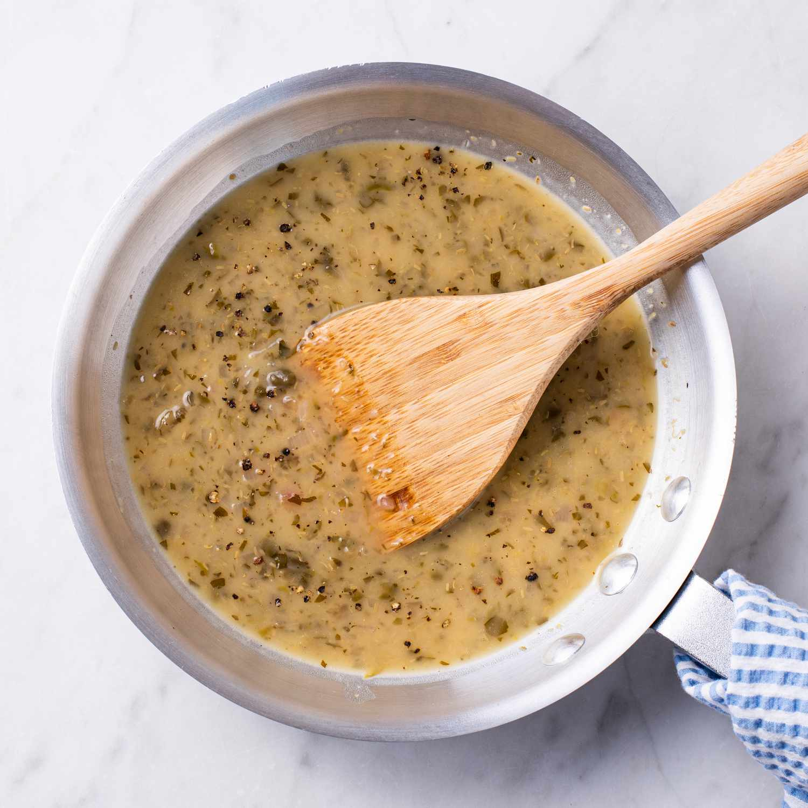

White Wine Sauce
A rich and creamy white wine sauce

This is an absolute workhorse of a sauce, undertones of citrus with a decadent finish!
This sauce can be used in almost any dish, use it as a base for pasta dishes, serve on top of fish, or even as a side with a meat or vegtable dish!
Ingredients
- 100ml white wine
- 1 large onion
- 2 bulbs garlic
- 25ml lemon juice
- 250 ml double cream
- 1 bunch dill
Steps
- First, dice the onions and garlic, get them simmering in a saucepan with a little oil until soft
- Add in the lemon juice first, shortly followed by the white wine, have the heat at a medium and allow this to reduce by half
- When the wine has reduced, add in the cream, stir through and allow to simmer away until it has reduced to a thickness you desire
- Lastly chop the dill and toss into the sauce, stir through and then add salt to taste
- That is it! you can serve straight away or it will keep for up to 3 days for use with another dish.